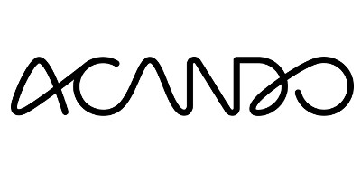

Logo

Acando
Digitalt konsulentselskap
Tordenskioldsgate 8-10, 0160 Oslo
93001000
https://www.acando.no/
Dan Vigeland
Privat
SBN medlem
SBN Prime medlem
About
Om
Acando er et konsulentselskap som jobber med digitale transformasjoner i offentlig og private virksomheter. Teknologi er
en sentral driver til forandring, men det er brukerens evne og ønske om å ta teknologien
i bruk som skaper verdi. Med teknisk spisskompetanse og inngående innsikt i brukeratferd
og forretningsutvikling drevet av digitalisering, skaper vi idéer, løsninger og mobiliserer
organisasjoner til forandring. Et av våre satsningsområder er Smart City der Intelligente
Transportsystemer (ITS) og selvkjørende minibusser i alminnelig trafikkmiljø, er en del av
satsningen.
Tags


Tags
Selvkjørende, autonom, smart transport, smart mobility, buss
Ansatte
Frode Kjos
Director Smart Transport
95913285
frode.kjos@acando.no
Dan Vigeland
Director Smart City
93248286
dan.vigeland@acando.no
Prosjekter
Se i kart

Selvkjørende buss på Fornebu
Dette blir Norges aller første prosjektet med selvkjørende busser i rute. Bussene skal i første omgang kjøre på korte strekninger.
Hastigheten blir på cirka 15 km/t, og bussen tar inntil 12 passasjerer. På Fornebu
skal bussene frakte badegjester til Storøyodden badestrand gjennom hele skoleferien.
Prosjektet gjennomføres med støtte fra Bærum kommune og konsulentselskapet Acando.
23/4-2018
Frode Kjos
Fornebu, Oslo
www
Selvkjørende, autonom, smart transport, smart mobility, buss
Se i kart
Selvkjørende bønder i byen
Noe som foregår hver helg og som har foregått i hundrevis av år.
10/5-2018
Terje Christensen
Hele landet
www
Selvkjørende, smart?
Nyheter
Presentasjon Hutigruten 2018
Link til nedlasting av presentasjonen finner du ved å klikke på ...
4/5-2018
Frode Kjos
Lesefolder til Hurtigruten 2018
Acando er initiativtaker til å bringe de selvkjørende minibussene til Norge. Frem til i dag har vi gjennomført 17 demonstratorprosjekter
i ...
4/5-2018
Dan Vigeland/Director Smart City og Frode Kjos/Director Smart Transport